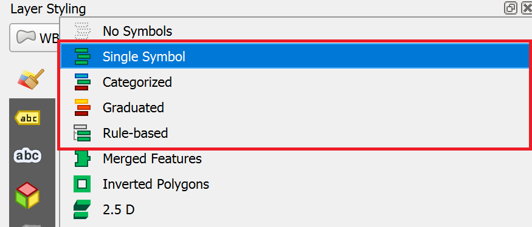
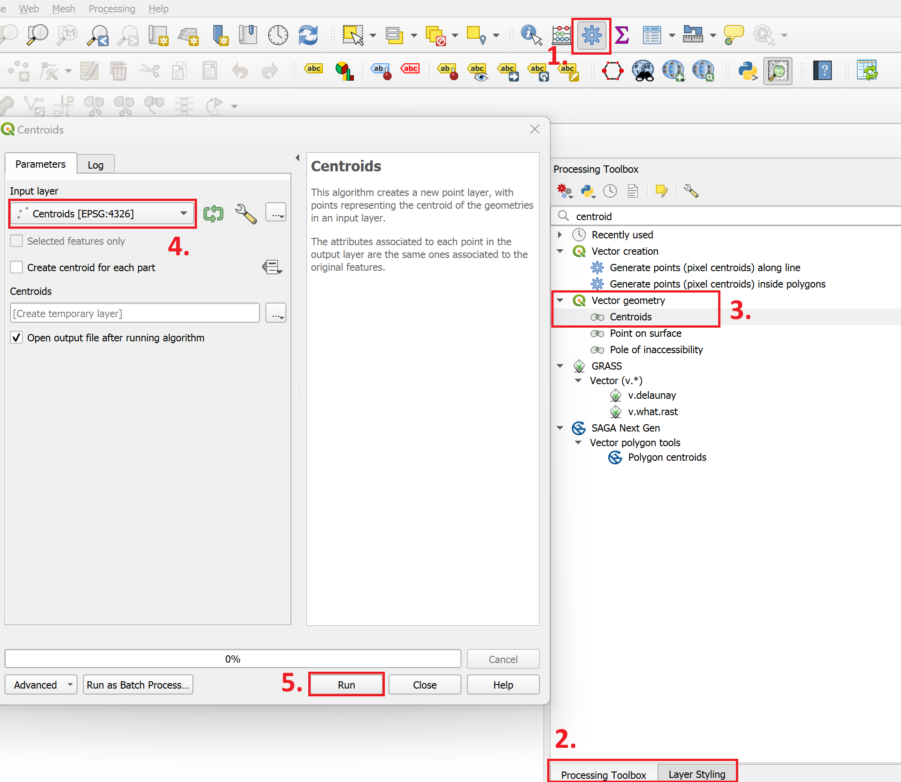

Estilos de datos vectoriales#
En el capítulo anterior se repasaron los fundamentos de la simbolización gráfica y las variables visuales. En este capítulo, queremos aplicar nuestra comprensión de la representación visual y aprender a utilizar el panel de estilos en QGIS para personalizar cómo se visualizan las capas en su proyecto QGIS.
Panel de estilo#

Panel de estilo en QGIS 3.30.2.#
Para cada capa de QGIS existe un panel de estilos, en el que se puede cambiar la simbología, el color y la etiqueta de las entidades de esa capa. Hay dos maneras de abrir las opciones de estilo de capa en QGIS:
Haga clic con el botón derecho en la capa a la que desee aplicar el estilo y seleccione
properties. Se abrirá una nueva ventana con una sección de pestañas vertical a la izquierda. Vaya a lasymbologypestaña.Abra el panel de estilo de capas activándolo en
View>Panels>Styling Panel. Normalmente, el panel aparecerá en la parte derecha del lienzo del mapa.
A la izquierda del panel de estilo puede elegir las distintas pestañas para acceder a las diferentes opciones de estilo.
En el panel de estilos, puede cambiar el estilo de todas las entidades de una capa y establecer categorías para los distintos símbolos, crear etiquetas y crear rampas de color para diferenciar las entidades con valores variables.
Video: Abrir el panel de estilo
Simbología para datos vectoriales#
Puede utilizar variables gráficas para aplicar estilos a los datos vectoriales. Como ya hemos aprendido, los datos vectoriales pueden ser puntos, líneas o polígonos. Existen diferentes opciones para simbolizar estos diferentes tipos de datos vectoriales.

Simbolización de datos vectoriales; fuente: White, T. (2017). Symbolization and the Visual Variables. *The Geographic Information Science & Technology Body of Knowledge (edición segundo trimestre de 2017), John P. Wilson (ed.). DOI: 10.2222/gistbok/2017.2.3.#
Note
Recuerde que la simbología de la capa se guarda en su archivo de proyecto, ¡No en su shapefile! Si comparte un shapefile con un colega, tendrá un estilo diferente cuando lo añadan a su propio proyecto.
QGIS le permite visualizar datos con el uso de marcadores simples, archivos SVG o archivos ráster. Lo más habitual es trabajar con marcadores simples. Generalmente, se utilizan para crear los símbolos de la mayoría de los elementos de un mapa. Por ejemplo, se utilizan marcadores simples para visualizar calles, siluetas de edificios, masas de agua, límites administrativos u otros polígonos. La mayoría de los marcadores simples constan de un relleno y un contorno. Según el tipo de geometría de la capa, deberá utilizar diferentes opciones de simbología.
El relleno determina el color de relleno del símbolo. Puede cambiar el color y la transparencia. También puede hacer rellenos más complejos, como un relleno de patrón de línea o un relleno de símbolo SVG.
El contorno determina el color, el tipo y el grosor del contorno. Junto al color y la transparencia, el contorno es el elemento más critico para diferenciar entre los distintos elementos. Por ejemplo, las líneas más gruesas para las carreteras suelen significar vías de un orden superior (como autopistas), mientras que las líneas discontinuas finas, podrían significar senderos, inaccesibles para los vehículos de carretera.
Puede aplicar estilos a un único símbolo para cada capa o utilizar estilos diferentes basados en un método de categorización.
En la pestaña Simbología, puede seleccionar entre varios métodos de simbolización (consulte en_3.36_m4_symbolisation_methods). Los más importantes son Símbolo único, Categorizado, Graduado, y Basado en reglas.
{kind=link}

Asigna un símbolo a cada entidad del conjunto de datos, sin importar, si los atributos son diferentes.
Por ejemplo, asigne un símbolo de hospital a una capa que solo contenga puntos, que muestren la ubicación de hospitales.
Clasifica las entidades en categorías con el uso de un atributo (
Value).Se crea una categoría para cada valor único de este atributo.
Cada categoría puede asignarse a un símbolo diferente.
Puede utilizarse tanto para datos nominales como ordinales.
Por ejemplo, asigne un símbolo diferente para cada tipo de edificio (industrial, comercial, público, residencial, etc.)
Crea clases para los datos numéricos.
Se puede seleccionar un gradiente de color para representar la distribución de los datos.
Por ejemplo, cree seis clases de tamaños de población y asigne un gradiente de color de blanco a rojo para indicar el tamaño de la población en un distrito (consulte el Módulo 3: Clasificación de datos geoespaciales).
Cree reglas mediante el uso de una expresión y asigne un símbolo a las entidades, en las que se aplica la regla.
Puede especificar con mayor precisión las entidades que desea simbolizar.
Puede utilizar valores de distintos atributos (por ej.:,tipo de edificio y distrito urbano).
El constructor de expresiones le ayuda a crear reglas ya que le muestra los valores, campos, operadores, etc. disponibles.
Por ejemplo, seleccione un símbolo para cada centro de salud, que sea un hospital y haya excedido su capacidad.
A continuación, repasaremos algunos métodos de aplicación de estilos habituales en cartografía.
Estilos de límites administrativos (polígonos)#
Al crear informes de situación, utilizará, con frecuencia, límites administrativos. En el siguiente ejemplo, queremos crear un mapa general mediante el uso de los límites administrativos de Nigeria. Para visualizar los tres límites administrativos al mismo tiempo, tenemos que configurar la simbología de cada capa, de modo que las capas inferiores sean visibles y se pueda distinguir la jerarquía de los niveles administrativos.
Opcional: ¡Es su turno!
Puede seguir la guía paso a paso con la descarga de los límites administrativos de Nigeria en OCHA Nigeria.
Mostrar solo los contornos de los polígonos#
Ahora, queremos cambiar la simbología de una capa para que solo sean visibles los contornos de los polígonos. Esto es necesario para hacer visibles las capas inferiores a ésta.
Para cambiar la simbología de una sola capa:
Abra
Styling panely vaya a la pestaña de simbología. Por defecto, la simbología se configurará enSingle Symbol. Esto significa que se aplicarán los mismos colores y contornos a todas las entidades de esa capa.Haga clic en
Simple Fill.Haga clic en la flecha situada a la derecha de
Fill Colour.Marque la
Transparent Fillopción.

Video: Transparentar el color de relleno
Ajuste de los estilos de varias capas superpuestas#
Paso 1: Ordenar las capas
Importe los límites administrativos a su proyecto QGIS.
Tenemos que ordenar las capas en el panel de “Layers” de modo que la
adm0capa se sitúe en la parte superior, seguida deadm1yadm2. Al principio, esto puede parecer raro porqueAdm0lo cubrirá todo.

Ordene las capas y vaya al panel de estilo de la capa superior#
Cambie la simbología de la capa Adm0 abriendo el panel de estilos y navegando hasta la pestaña de “Symbology”.
Haga clic en
Simple Fillpara abrir las opciones de estilo.Despliegue el
Fill Colourmenú y marque laTransparent Fillopción. Esto hará visibles solo los límites, por lo que podremos ver la capa debajo de esta.Elija un
Stroke Coloury haga elStroke Widthde 0,66 milímetros.Haga clic en “OK”.
Repita el mismo proceso para la capa Adm1, utilizando el mismo color que para Adm0 (estará en “colores recientes”) y deje el ancho del trazo en 0,26.
Ahora podemos ver los límites del país y sus estados y detrás de ellos los distritos (Adm2).
Hagamos que el estilo de la capa de distritos sea consistente con los demás.
Elija un
Fill Color.Utilice el mismo “Stroke colour” que para Adm0 y Adm1, pero haga que el ancho sea de 0,1 milímetros y el estilo de trazo Dash Line.
Haga clic en “OK” y mire su mapa: ¡Esperamos que empiece a verse más bonito!

El estilo de datos vectoriales consiste en el color y el contorno.#
Video: Ajuste del estilo para múltiples capas
Creación de un mapa coroplético (“Gradudated Styling”)#
Si una capa contiene valores numéricos, que son continuos, pueden organizarse en intervalos. Estos intervalos pueden visualizarse con colores graduados. En este ejercicio, asignamos colores a los polígonos de Adm1 en función de la población total de cada estado.
Descargue el shapefile NGA_Adm1_Pop y guárdelo en su carpeta shapefile.
En QGIS, desactive las capas Adm1 y Adm2, y solo deje la Adm0.
Arrastre el shapefile NGA_Adm1_Pop a su mapa.
Abra sus opciones de
Symbologyy elijaGraduated.Seleccione el valor, que desea utilizar para asignar colores, en este caso, será
total_pop.

Con rangos variables, seleccione simbología graduada y elija el atributo con valores continuos#
Haga clic en
Classifypara enumerar todos los valores divididos en clases.Elija en cuántas clases desea dividir los datos: digamos 4.
Por defecto, la rampa de color será roja. Sin embargo, el rojo no es el color adecuado para el recuento de la población, ya que suele utilizarse para comunicar elementos negativos, como la inseguridad alimentaria o los casos de cólera.
Haga clic en la flecha situada junto a la rampa de color para elegir otra combinación de colores: digamos una rampa de color del blanco al azul.
Haga clic en
Applypara obtener una vista previa del aspecto de su capa, luego haga clic enOK.

Puede clasificar los valores continuos en clases y asignarles una rampa de color.#
El siguiente mapa muestra los estados más poblados de Nigeria mediante una categorización graduada por colores. Este tipo de mapas se denominan mapas coropléticos.

Mapa que muestra la población de los estados nigerianos.#
Video: Cómo crear un mapa coroplético
Crear un mapa con símbolos graduados#
Los símbolos graduados son útiles cuando se tiene más información en el mapa y no es posible, crear un mapa coroplético,
o en situaciones, en las que desee comunicar dos variables, en un mismo mapa. Por ejemplo, es fácil combinar
mapas coropléticos con símbolos graduados.
La creación de mapas con símbolos graduados se realiza de forma similar a la creación de mapas coropléticos, pero implica un paso adicional:
Crear centroides de los límites administrativos. Los centroides son puntos, que se sitúan en el centro calculado de
polígonos (consulte elmódulo 5).
Utilizaremos la misma capa que para el mapa coroplético (consulte en_map_design_example_variable_ranges):
NGA_Adm1_Pop.
En la caja de herramientas de procesos, busque la herramienta
centroids. Haga doble clic en ella. Se abrirá una nueva ventana (consulteen_3.36_m4_centroids)
{kind=link}

Creación de centroides en QGIS 3.36.#
En
Input Layer, seleccione laNGA_Adm1_Popcapa . Haga clic enRun.Aparecerá una nueva capa de puntos denominada
Centroidsen su panel de capas. Abra su panel de estilo y navegue hasta la pestaña de simbología.Configure el método de simbolización a
Graduated.En Valor, seleccione
total_pop.Cambie Method de
ColouraSize.Haga clic en
Classify.Opcional: Cambiar el color y la transparencia de los círculos.

Mapa de Nigeria que muestra los mismos datos. Una vez con el uso de colores graduados (coropléticos) y símbolos graduados (círculos proporcionales).#
Video: Cómo crear un mapa de círculos proporcionales
Utilizar diferentes estilos en una sola capa#
Al categorizar o clasificar los datos en una sola capa, podemos asignar diferentes estilos a cada clasificación. Podemos utilizar la simbología para mostrar la diferencia entre las entidades en la misma capa. Por ejemplo, podría tratarse de distintos tipos de edificios, cantidades de casos de Covid por distrito o tipos de carreteras. Podemos elegir un atributo específico de un conjunto de datos para asignar diferentes colores, contornos o tamaños a las entidades:
Configuración de los diferentes símbolos de puntos para distintas entidades#
Descargue el GeoPackage de incidentes de seguridad de ACLED y cárguelo en su proyecto de QGIS. Se trata de una capa de puntos en la que cada punto, indica un incidente de seguridad distinto.
Abra el
Symbology tabpara esa capa y elijaCategorizeden lugar deSingle Symbol.
Note
La simbología categorizada se utiliza cuando se dispone de variables distintas.

Cambie el tipo de simbología a Categorized y elija el valor (variable) que desea visualizar.#
Ahora tenemos que elegir qué atributos queremos mostrar a través de la simbología. En este caso, podría ser el número de víctimas o el actor que perpetró el acto. Categoricemos las entidades por
event_type.Haga clic en
Classifypara enumerar todos los valores únicos contenidos en el campoevent_type(es decir, todos los posibles tipos de incidentes de seguridad registrados en nuestra tabla).Ahora podemos cambiar el estilo de cada valor individual.
Haga doble clic en el valor
Explosions.En la parte inferior de la ventana del selector de símbolos, elija un símbolo para resaltar los puntos de explosión.
Haga clic en
OK, luego enApplypara obtener una vista previa del aspecto que tendrá la capa.Haga clic en
OKde nuevo.

Al hacer doble clic en los valores únicos de la lista clasificada, puede cambiar el símbolo de cada valor.#
Ahora, tenemos un mapa de Nigeria, en el que puede localizar las zonas, que fueron afectadas, más que otras, por las explosiones. En el mapa que figura , a continuación, también hemos añadido etiquetas de texto, que se explicarán más adelante.

Regiones afectadas por las explosiones en Nigeria.#
Video: Configurar diferentes símbolos en una sola capa
Marcadores simples, símbolos SVG e imágenes ráster
Además de los marcadores simples, QGIS también le permite utilizar símbolos SVG e imágenes ráster, como símbolos para los datos vectoriales.
Los marcadores simples son formas simples como rectángulos, círculos o cruces, que pueden ajustarse en la capa de simbolización (color, tamaño, contorno, etc.). La mayor parte de su estilo en QGIS se hará con estos marcadores.
Los símbolos SVG son *símbolos gráficos vectoriales escalables *. Como archivos vectoriales, pueden expandirse a cualquier tamaño, mientras, que mantiene la misma resolución. En la mayoría de los casos, si desea utilizar un símbolo más complejo (por ej.: hospital, escuela, estación de tren), los símbolos SVG son la mejor opción, ya que le permiten ajustar el símbolo (colores, contorno, tamaño, etc.).
Si selecciona las imágenes ráster, la resolución del símbolo estará limitada por la cantidad de píxeles de la imagen. No es aconsejable utilizar imágenes de alta resolución como símbolos en su mapa porque esto podría sobrecargar su computadora.
Uso de símbolos SVG y IFRC#
Uso de símbolos SVG#
En algunos casos, es posible que desee utilizar símbolos más complejos en su mapa. Por ejemplo, una cruz para un hospital, un libro para una biblioteca o un avión para un aeropuerto. En estos casos, puede utilizar los símbolos SVG. Tenga en cuenta que, normalmente, los símbolos SVG solo funcionan para datos de punto. Para utilizar los símbolos SVG:
Abra el panel de estilo y las opciones de
single marker.En
Symbol layer type, seleccione “Marcador SVG”.Desplácese hacia abajo hasta el navegador SVG. Aquí encontrará todas las carpetas de sus bibliotecas instaladas SVG.
Ya existe, por defecto, una biblioteca de símbolos SVG. Si busca un símbolo concreto, inténtelo en la barra de búsqueda.
Añadir una biblioteca externa SVG#
QGIS también le ofrece la opción de añadir sus propias bibliotecas SVG, por ejemplo, si su organización utiliza un conjunto específico de iconos. Si tiene una biblioteca de símbolos SVG en una carpeta, puede añadirlos a su administrador de estilos.
Abra el administrador de estilos:
Settings>Style Manager.Haga clic en
Import / Exporty seleccioneImport items.Navegue hasta la ubicación donde haya guardado la biblioteca o el estilo y seleccione el archivo (en la mayoría de los casos .qml, pero el tipo de archivo también puede ser .xml).
Ahora puede seleccionar los símbolos, que desea importar. En la mayoría de los casos, puede seleccionar todos los símbolos.
Haga clic en
Import.
Los nuevos símbolos SVG están en su biblioteca SVG.
Uso de símbolos de IFRC#
Repositorios de símbolos de IFRC y de la ONU
La Federación Internacional de Sociedades de la Cruz Roja y de la Media Luna Roja (IFRC) proporciona iconos y símbolos, que pueden utilizarse en sus mapas. Puede encontrarlos en este enlace.
También existe una biblioteca con iconos humanitarios de la Oficina de la ONU para la Coordinación de Asuntos Humanitarios (OCHA) que puede consultarse aquí. Los archivos están disponibles en diferentes formatos, que Ud. puede utilizar en QGIS.
Preguntas de autoevaluación#
Ponga a prueba sus conocimientos
Nombre y describa los cuatro métodos principales de simbolización utilizados para las capas vectoriales.
Respuesta
Símbolo único
Todas las entidades utilizan el mismo símbolo (mismo color, tamaño, trazo) independientemente de sus atributos.
Categorizados (Valores únicos/Categorizados)
Las entidades se estilizan por categorías distintas (valores de atributo). Cada valor único (o clase) recibe su propio símbolo (tono, forma, etc.).
Símbolos graduados
Los atributos numéricos (continuos) se dividen en clases (rangos de valores) y cada clase recibe un símbolo (a menudo, con una rampa de colores). Se utiliza para mostrar la variación en los datos cuantitativos.
Basado en reglas
Los usuarios definen una o varias reglas mediante el generador de expresiones, que determina el símbolo que recibe cada entidad. Las reglas pueden combinar atributos y lógica espacial, lo que permite un estilo condicional complejo.
¿Dónde se guarda la simbología de una capa?
Respuesta
La simbología de una capa no se guarda en el conjunto de datos. Si solo comparte el conjunto de datos con un colega, la capa no aparecerá como en su computadora.
La simbología se almacena en el archivo de proyecto QGIS (
.qgzo.qgs).También es posible exportar o guardar el estilo externamente (como un archivo
.qml) para poder reutilizarlo o compartirlo.
Al estilizar las capas de polígonos (por ej.: los límites administrativos), ¿Para qué sirve utilizar relleno transparente y contornos visibles?
Respuesta
Contexto: El relleno transparente permite que las capas subyacentes (por ej.: mapa base, imágenes, etiquetas) se muestren a través del contexto espacial.
Importancia de los límites: Los contornos visibles (trazos) indican claramente los bordes del polígono, aunque el relleno sea sutil.
Jerarquía y legibilidad: Si se muestran muchos polígonos superpuestos o regiones adyacentes, los rellenos transparentes evitan que las áreas se bloqueen entre sí, mientras que los contornos mantienen los límites diferenciados.
Explique cómo se crea un mapa coroplético en QGIS con el uso de colores graduados. ¿Qué debe elegir (por ej.: atributo, número de clases, rampa de color)?
Respuesta
Hacer clic con el botón derecho en la capa, seleccionar
Propertiesy vaya hasta la pestañaSymbology.Cambiar el método de simbolización de
Single-SymbolaGraduated.Junto a
Value, elegir el atributo numérico, que se desee visualizar en el mapa coroplético (por ej.: densidad de población, porcentaje, precipitación, casos de enfermedad normalizados, etc.). El valor de este atributo determinará el color.Elegir un método de clasificación y configurar el número de clases (por ej.: intervalo equitativo, cuantil, cortes naturales, etc.).
Elegir una rampa de color adecuada para la información, que se quiere visualizar (claro → oscuro).
Haga clic en
ClassifyyApply.Observar el lienzo del mapa y realizar los ajustes necesarios (por ej.: eliminar los contornos de los polígonos).
¿Qué son los símbolos SVG y qué ventajas ofrecen sobre las imágenes ráster para la simbología de puntos?
Respuesta
Los símbolos SVG (Gráficos Vectoriales Escalables) son iconos o gráficos basados en vectores, que pueden utilizarse para simbolizar puntos en QGIS.
Ventajas:
Escalabilidad sin pérdidas: Los Gráficos Vectoriales Escalables (SVG) se escalan suavemente (acercar o alejar zoom) sin pixelado ni borrosidad, mientras que las imágenes ráster, se degradan al cambiar de tamaño.
Editable/estilizable: Se puede cambiar el color, el trazo, el relleno y el tamaño de forma dinámica, ya que el símbolo está basado en vectores.
Nitidez en la impresión: Mantienen los bordes nítidos a cualquier resolución, por lo que son mejores para la producción cartográfica.